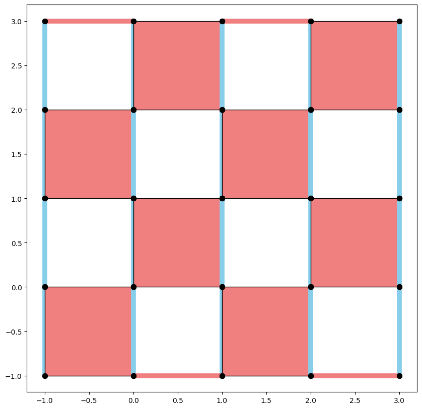
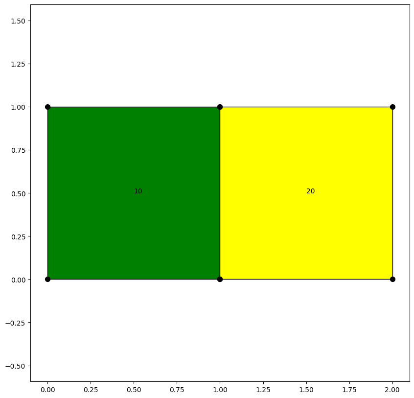

Contents
Menu
Expand
Light mode
Dark mode
Auto light/dark, in light mode
Auto light/dark, in dark mode
Hide navigation sidebar
Hide table of contents sidebar
Skip to content
Toggle site navigation sidebar
Qiskit QEC 0.0.0
Toggle Light / Dark / Auto color theme
Toggle table of contents sidebar
Back to top
View this page
Toggle Light / Dark / Auto color theme
Toggle table of contents sidebar
Qiskit QEC How-to guides
¶

How-to: Create Codes

How-to: work with geometry objects